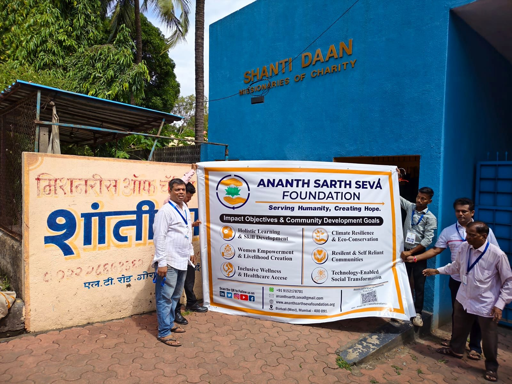
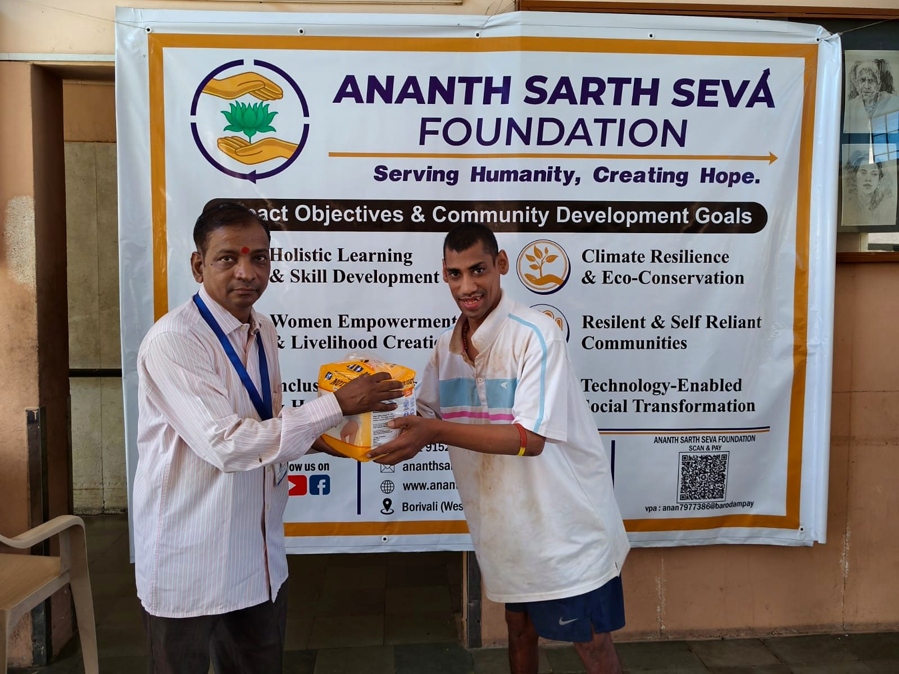
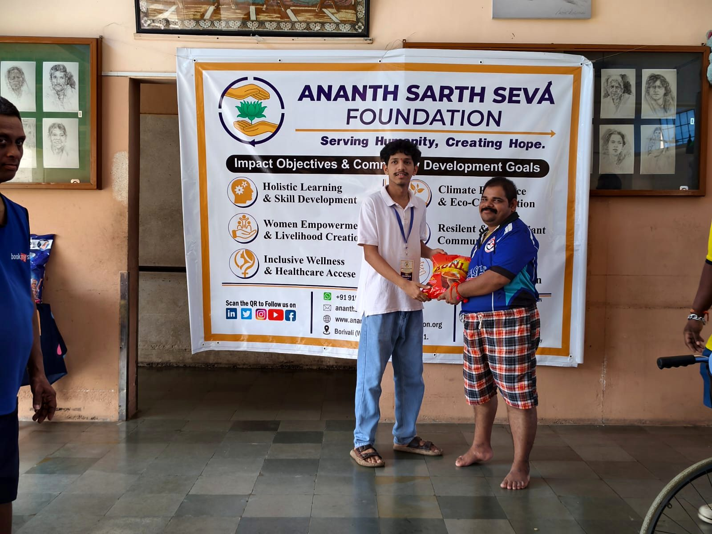
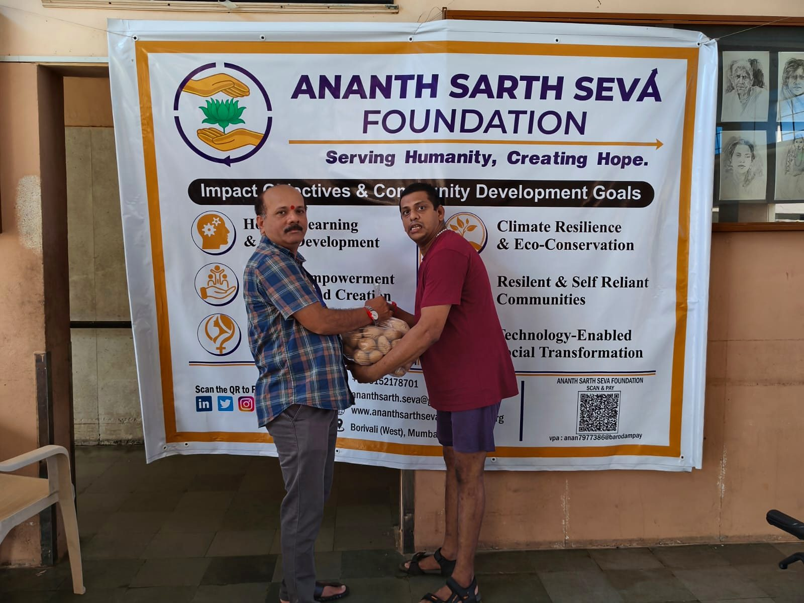
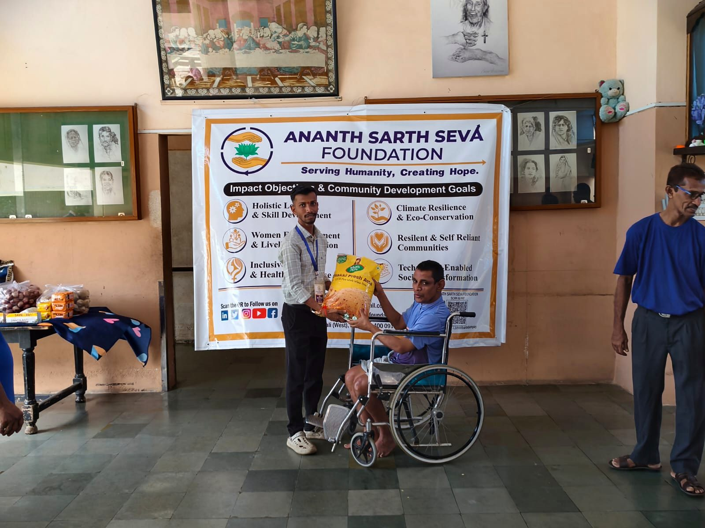
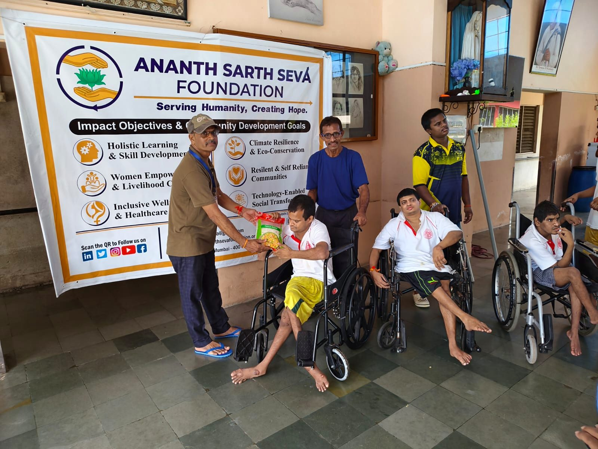
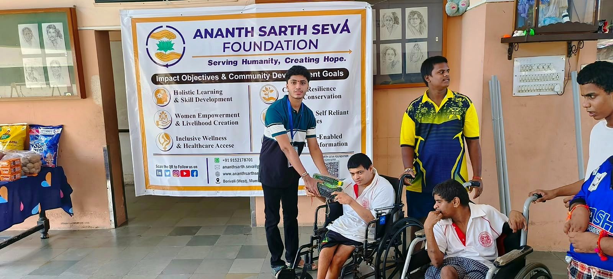
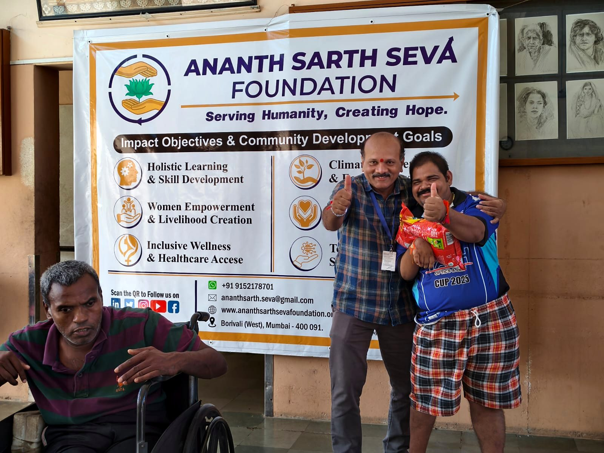
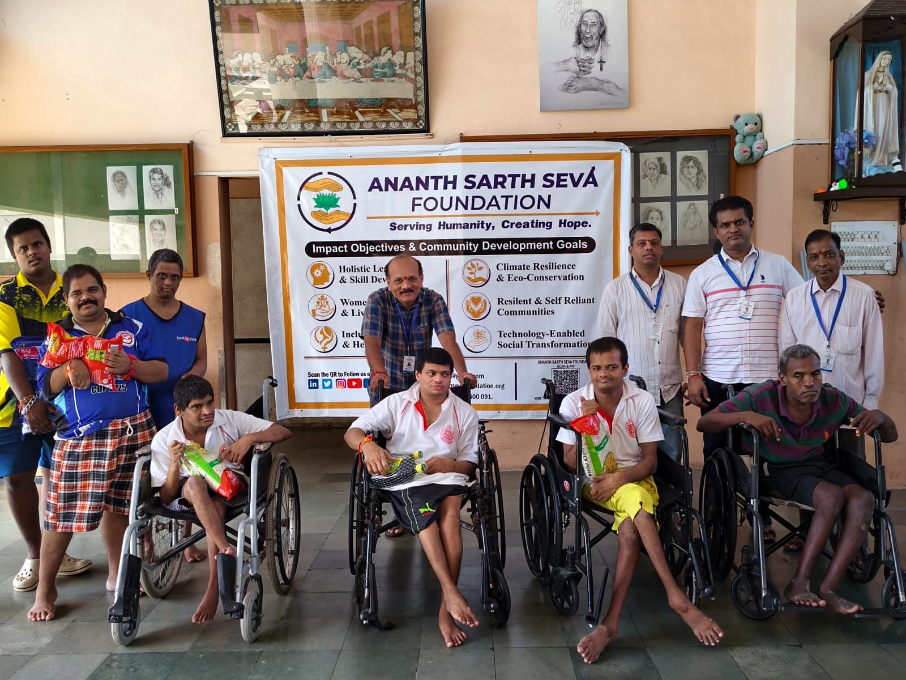
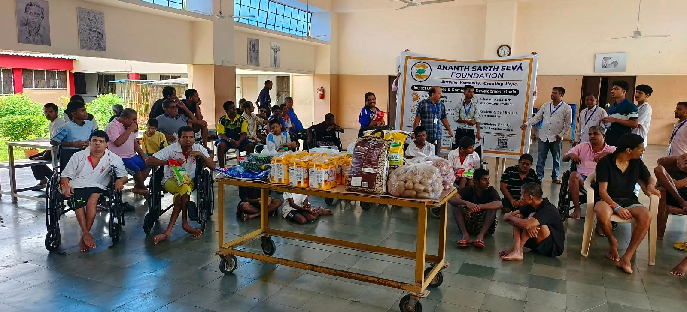

Direct Relief
Handed over essential daily provisions and hygiene items identified to support the home's operational needs.
Chapter 01 — Where it begins

Marking the beginning of our outreach journey, the Ananth Sarth Seva Foundation organized its inaugural support drive at Shanti Daan, run by the Missionaries of Charity. The initiative was dedicated to addressing immediate daily needs, providing tangible relief, and spending quality time with the residents.
Witnessing firsthand the selfless dedication of the caregivers at Shanti Daan reinforced our core mission: to stand beside vulnerable communities through purposeful, direct action. This initiative marks the first of many steps toward creating meaningful, lasting impact.
To stand beside vulnerable communities through purposeful, direct action.
Our core mission, reaffirmed at Shanti Daan
Handed over essential daily provisions and hygiene items identified to support the home's operational needs.
Team members spent meaningful time interacting with the residents and staff to offer encouragement and companionship.
Successfully established our transparent, end-to-end process for sourcing, verifying, and delivering in-kind support.
The home's operational needs.
Essential daily provisions and hygiene items.
Our transparent, end-to-end process.
In-kind support.
Chapter I · Arrival
The building and the banner mark the start of the photo story.
Chapter II · Preparation
Provisions laid out, with the team gathered around the table.
Chapter III · The Handover
Packages shared, one handover at a time.

06Two people hold a yellow package together in front of the banner.
07Two people hold a red package together in front of the banner.
08Two people hold a clear bag of potatoes together.
09A standing person and a person seated in a wheelchair hold a yellow bag together.
10A person wearing a cap holds a package with a seated person as others look on.
11A standing person and a seated person hold a green package together.Chapter IV · Together
A thumbs-up, a group portrait, and the hall gathered together.

12Two people stand with their arms around each other and give thumbs-up gestures.What stayed with us was not the provisions. It was the time we spent together.
— Ananth Seva team

13A group poses in front of the banner, with several people holding packages.
14People gather across the hall around a trolley loaded with provisions.Chapter 01 · CompletePhotographs by Ananth Sarth Seva Foundation volunteers · Shanti Daan, Missionaries of Charity · 30 August 2026